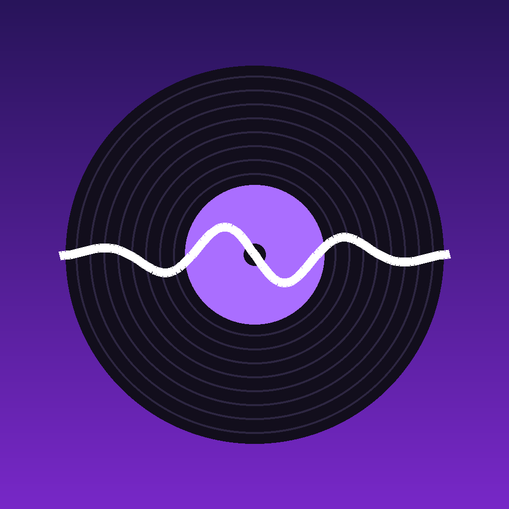

Slowed
Slowed + Reverb en un toque · One-tap Slowed + Reverb
Añadir a AltStore · Add to AltStore Añadir a SideStore · Add to SideStore Descargar IPA · Download IPA- Slowed + Reverb, nightcore y daycore con presets y controles finos.
- Ecualizador de 10 bandas, bass boost, 8D, eco y «bajo el agua».
- Letras sincronizadas (etiquetas, .lrc o LRCLIB).
- Tu propia música offline, incluido FLAC hi-res de 24-bit.
- Sin anuncios, sin cuenta, gratis y open source.
GitHub · MIT License